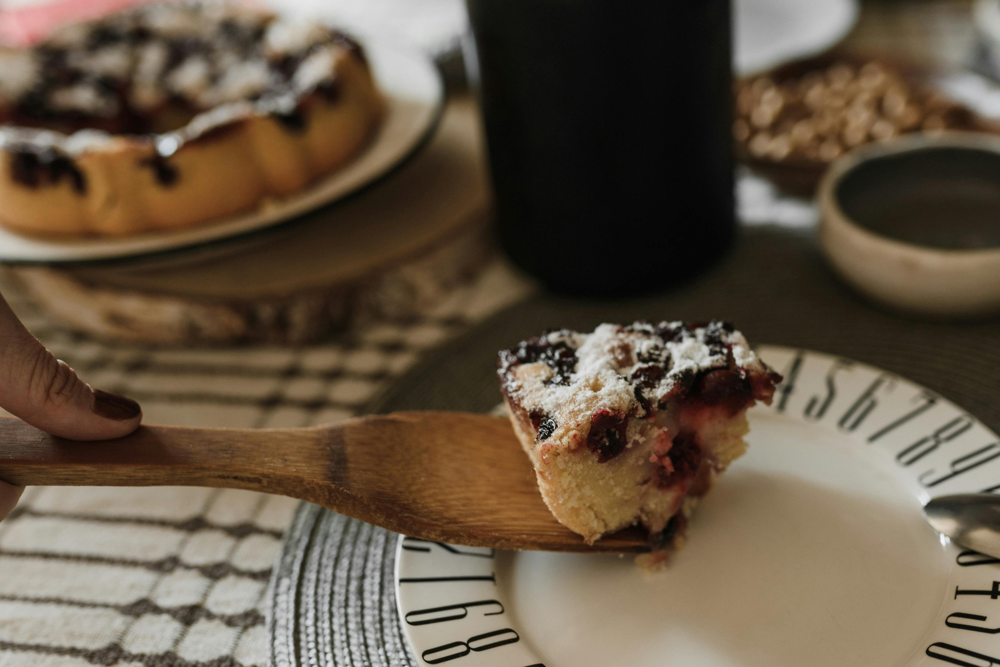

Monastyrska Izba (Monastic Hut Cake)
Home

Description
If you are a fan of cherries, you will go crazy about the traditional Ukrainian Monastic Hut cake. This shortbread triangular dessert indeed tastes just as fantastic as it looks. Its win-win.
Ingredients:
-
For the dough:
- 250g butter
- 500g flour
- 250ml sour cream
- 1tbs vanilla sugar
p.s. or if you're anything like me - just buy puff pastry, 2-3 packs should be enough
-
For the cream:
- 750g sour cream
- 250g powdered sugar
- 250g butter
- 2tbsp lemon juice
-
For cherries in their own juice:
- 1kg ripe cherries pitter
- 250g sugar
- 50ml water
- 2 tbs starch
- 50ml water
Steps:
-
How to Make the Shortbread Dough:
- Mix the flour with the softened butter. Add the cream and knead thoroughly.
- Add the vanilla sugar and knead further. The dough should get sticky, but not runny.
- Spread the dough on a plastic wrap and place in the refrigerator for 30 minutes.
-
How to Make the Cream:
- Put the cream on a piece of cheesecloth. Squeeze out the excess liquid. Leave in the refrigerator for 30-60 minutes.
- Whisk the cream with the powdered sugar.
- Add the butter, warmed to room temperature. Mix in the lemon juice. Whisk thoroughly to achieve a thick texture.
- Cover with foil and place in the refrigerator for 20-30 minutes.
-
How to Prepare the Cherrries in their own juice:
- Wash and pit the cherries.
- Cover them with sugar, add 50ml water, and bring to a boil.
- Add the starch and keep cooking over a medium heat for 5 minutes.
- Strain the cooked cherries and leave to cool.
- Tip: Mix the cherries with a wooden spatula to avoid oxidation and loss of vitamins.
-
How to Make the Tubes:
- Roll out the cooled dough, making it 1/2cm thick. Cut it into long stripes of 5.5 x 20cm inch.
- Place the cherries onto the strips and roll them up and seal them. Prepare 15 such tubes.
- Place the tubes on the parchment paper, leaving with 2.5cm between them.
- Pierce the tubes with a toothpick or fork before baking.
- Bake for 10 minutes at 180°C. Cool the tubes.
-
How to Assemble the Cake:
- Spread the bottom of the dish with the sour cream.
- Place 5 tubes as the first layer, 4 tubes as the second layer, 3 tubes as the third layer, 2 tubes as the fourth layer, and 1 tube as the top layer.
- Spread the previously prepared cream over each layer.
- Let the cake sit for 10-12 hours before serving.
- Serve with mint leaves and a few cherries on top.